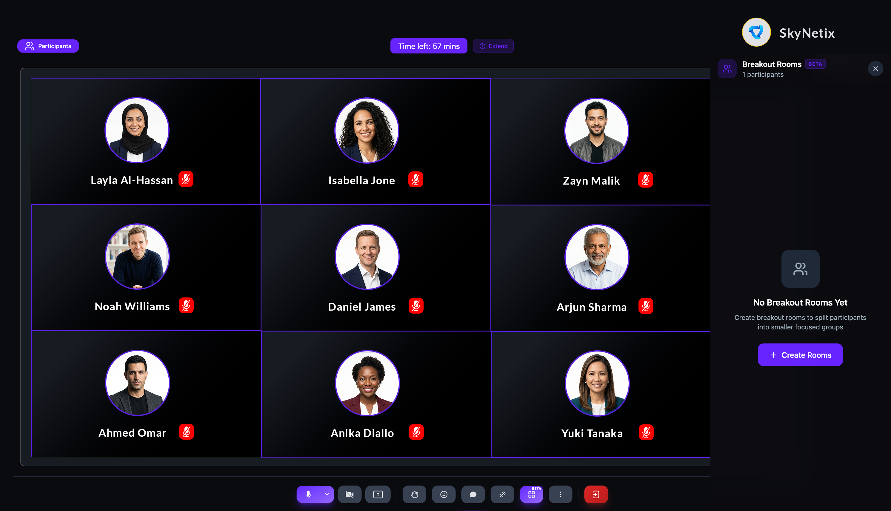

Create breakout rooms
Breakout rooms split participants into smaller groups for focused discussions during a live session. Set the number of rooms, choose manual or random assignment, set a duration, and launch — all from the call toolbar.
Before you get started
- You must have a host or moderator role to create breakout rooms.
- You must be in an active live session. The Breakout Rooms control is in the call toolbar.
- Breakout rooms is a Beta feature. Availability may vary.
Create breakout rooms
- Click the Breakout Rooms icon in the call toolbar.
- The Breakout Rooms panel opens on the right side of the screen.
- Click + Create Rooms.

- Set the Number of rooms using the + and − controls.
-
Choose an Assignment method:
- Manual — assign participants to rooms yourself.
- Random — the platform distributes participants automatically.
- Set the Duration: 5 min, 10 min, 15 min, or Custom.
- Click Create Rooms.

Please note: When breakout rooms are active, participants leave the main session view and join their assigned room. The host remains in the main session and can broadcast messages to all rooms.
Tip: Use Manual assignment when you need specific groupings (e.g., by topic or role). Use Random for networking-style breakouts where mixed groups are the goal.